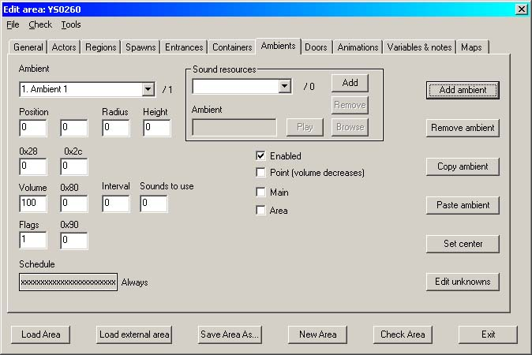
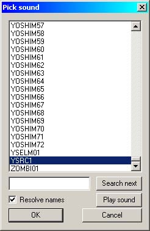
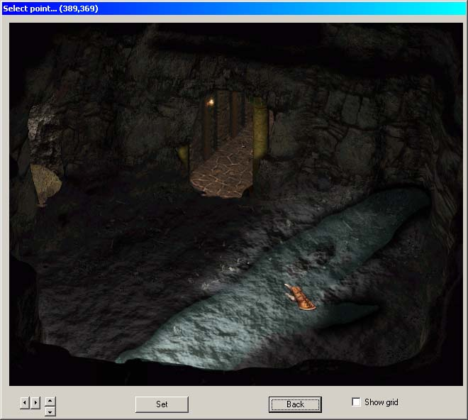
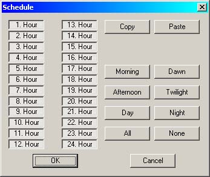
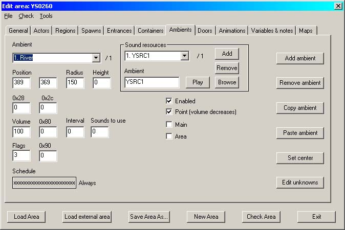
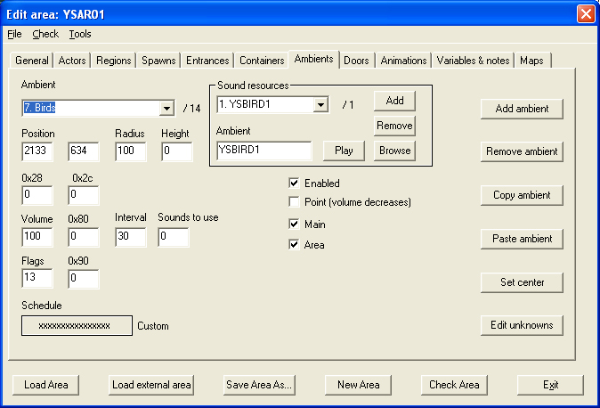
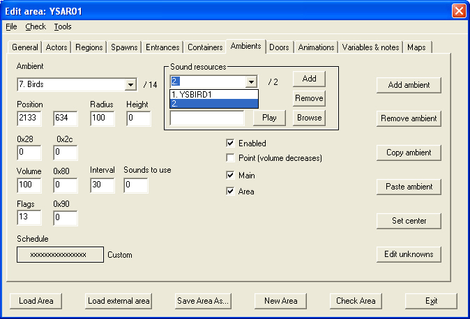
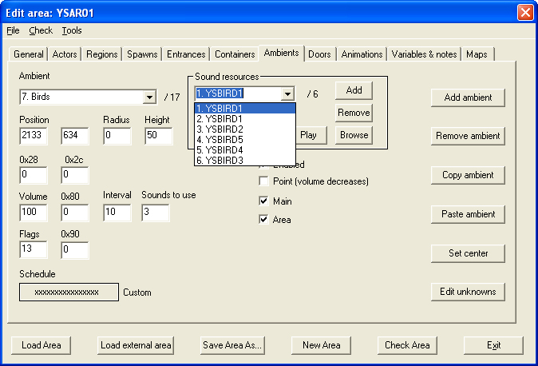

| Version History |
| Introduction |
| Creating the Sounds |
| Setting the Sound |
| Multiple Sounds |
Version History
1.0 Initial release 1.1 'Multiple Sounds' added Introduction
This tutorial will teach you how to set ambient sounds into your new area. Ambient sounds are the background sounds (water, sea, birds, voices, weather etc) that are always present and make the area 'come alive' aurally.
As with my other tutorials, this tutorial is set in my as-yet un-named seatown but this time it takes place in a cave underneath it.
I have no idea where you will be creating your mod, so I am going to assume that all of the relevant files are in your \bg2\override directory.
Unless you've changed your browser fonts to something weird and wonderful, the conventions in this tutorial are that black is descriptive text and blue bold is action text.
No we're not going to do this! Actually creating an ambient sound is beyond the scope of this tutorial and so I thought I should clear that up right at the start. It is purely about adding existing Infinity Engine sounds. There is nothing to stop you from creating your own sounds or from exporting sounds from other Infinity Engine games for use in the game you are modding for.
All ambient sounds have a range within which they can be heard. A very few (e.g. weather sounds) can be heard globally all across an area but these are quite rare within the Infinity Engine games.
Start DLTCEP if you haven’t already done so
As this is an already-started area, the name of the associated .wed file should automatically appear in the wedfile box.
|
 Image 1 – The blank ambient screen |
Change the name of the ambient to something memorable or useful; in this case we are going to add the sound to the river that was partly created in the 'Adding Overlays' tutorial and so I simply called the ambient 'River'.
To add the actual sound, we need to add it as a resource. Locate the 'Sound Resources' box and
The Sound Selector will pop up.
|
 Image 2 – The Sound Selector |
'ysrc1'? It is the river sound imported from Baldur's Gate; I used Near Infinity to export it as a decompressed .wav file and copied it into my bg2\override file. I also saved it somewhere else first.... just in case. There is no equivalent water sound in BG2 anywhere.
If you want the sound to decrease as the party walks away from it,
You also need to set the centre of the ambient area, otherwise the sound can't decrease as you walk away from it!
This will bring up a preview of your area. If necessary, scroll to where the centre of your ambient sound is. As this is a small area, a single centre will do but if this was a long river, I would need to set multiple ambients all calling the same sound and setting them so that the overlap caused as little variation in sound level as possible.
|
 Image 3 – Set Centre |
If this is a point source i.e. a sound that is heard only over a small area, then you need to set the radius that it can be heard from the centre point. Currently I do not know what measurement 'radius' is specified in, but trial-and-error has shown that it seems to need a minimum figure of 150. If you are setting an area-wide sound (such as a weather sound) then a radius is not needed but you will need to
In my case, the river is an 'always on' sound but if your sound is heard (for example) in daytime only, then the hours of noise can be set using the scheduler.
|
 Image 4 – The Time Scheduler |
Remember that button UP means NOT sounding at that time.
To briefly describe the other options;
If you are adding an ambient sound to an area such as a long river, you can ease the pain of adding many resources, radii, volumes etc. by judicious use of the Copy, Add and Paste buttons in that order. Just don't forget to change the centre point each time.....
|
 Image 5 – The Completed River |
You can have multiple sound resources stacked into a single ambient slot; this seems to be mostly used for area sounds but can also be used for partial areas where many activities overlap. My new town is really a scattered village built at the foot of a cliff because of the sheltered anchorage available and so it is mostly open areas and trees. This means that the two most prevalent sounds will be surf and birds; the surf is dealt with in the same way as the river by creating a series of point sounds along the coast. However, I want birdsong over the entire area with the emphasis on gulls as we near the coast.
Talking of gulls, I want to share with you one of the funnier things I have seen. I was walking through the centre of Belfast in Northern Ireland when a Greater Blackback gull swooped low along the main shopping street up to a set of trafiic signals, where a brand new Mercedes car was sitting waiting at a red light. Now, a Blackback gull has a wingspan well in excess of four feet (1.25 metres) - it's a big bird. It saw the bright red Mercedes and decided that this looked like an excellent place to land, so it did - right on the roof, totally ignoring all the people walking across the street next to it and probably made quite a noise in the car as it did so. The driver's side window came down and out shot a wildly flailing hand banging on the roof of the car to try and dislodge this bird. The gull simply ignored it and walked up and down the roof a few times. Finally it decided it had had enough of this thing flapping and banging around next to it, just as the traffic signals turned to green. The arm vanished back inside the car and the engine revved up wildy, but the gull got there first. With a lazy flap of its wings it took off just as the car started to accelerate - and crapped hugely and with great contempt all down the driver's windscreen. The nose of the car dipped violently as the driver slammed the brakes back on, totally blinded by the gull. Brilliant - you had to see it. Now you know why we call them 'shitehawks'.
Back to modding. The trick with main sounds like the one we are about to create is that you need at least one that is around fifteen seconds or so long. I stole the main bird ambient sounds from Baldur's Gate and used those as there are none in Shadow of Amn. I also lifted the shorter two-three second sound bursts of single birds. Image 6 shows the first long sound added in - follow the steps in the section above to arrive at this point.
|
 Image 6 – The main bird ambient |
Note that I have set the schedule to daylight hours only. There is also an error on this screen which I will correct later - the 'Interval', 'Sounds to use' and 'Radius' boxes all contain incorrect information. Assuming you have gotten safely to this point,
The '/1' you can see in image 6 will now change to '/2' but you will not see anything else yet.
|
 Image 7 – The new resource box |
For reasons I will explain shortly, I select the same main ambient sound again (ysbird1). Repeat the last few steps until you have the mixture of sounds you require for that ambient. For my area, in addition to the repeated main sound I also added four other short birdcalls of two-three seconds each. The last thing we need to do to set the ambient is to define how it should play. I want an almost continuous background sound with occasional individual birdcalls, so I opted for a 10 second repeat cycle with three sounds playing. With those two main ambient sounds occupying slots one and two, it is unlikely that my background noise will ever fall silent and if it does, it will only be for a very short period.
Remember that only birds require a Height figure.
|
 Image 8 – The completed main ambient |
The gulls are created in exactly the same fashion but with one main difference; as they need to be restricted to the coast they are not set as 'Main' and 'Area' but as 'Point' with a radius of 1000.
I then did it all over again but with the nightbird sounds, also stolen from Baldur's Gate!
|
Tutorial written by Yovaneth, apprentic’d at Candlekeep during the Bhaalspawn Troubles. Post it where you will but please don’t take credit for what you have not written. |